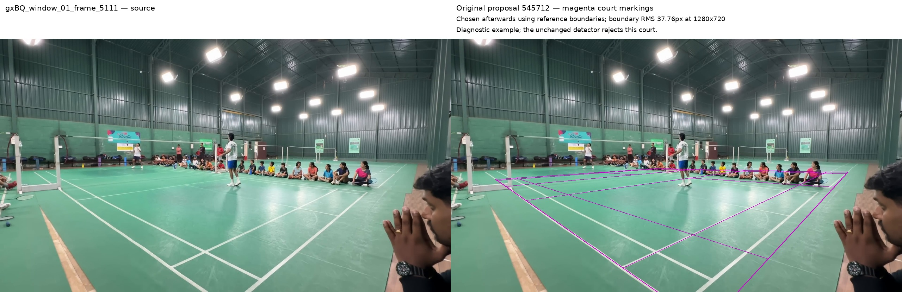
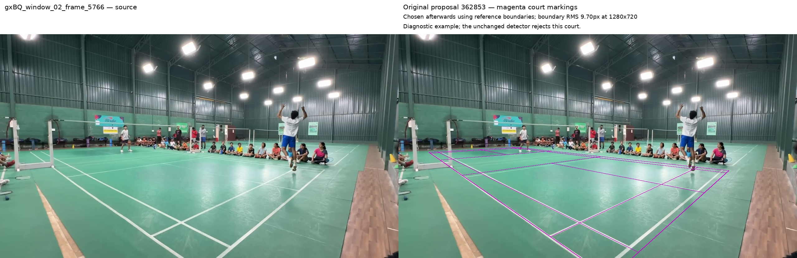
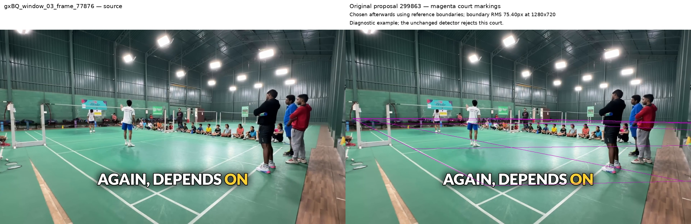
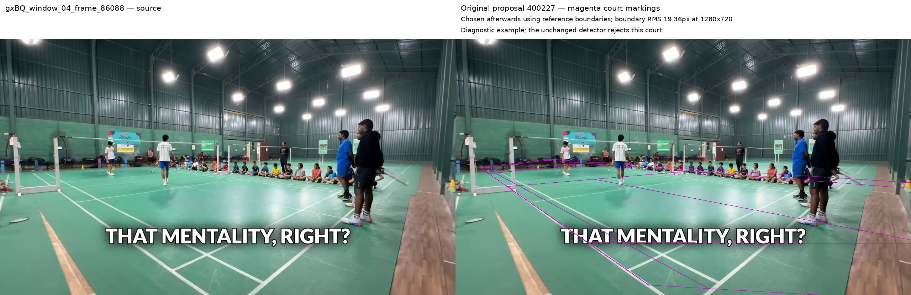
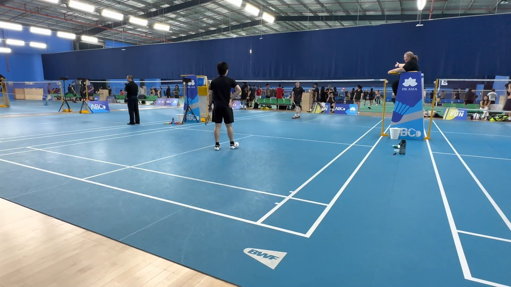
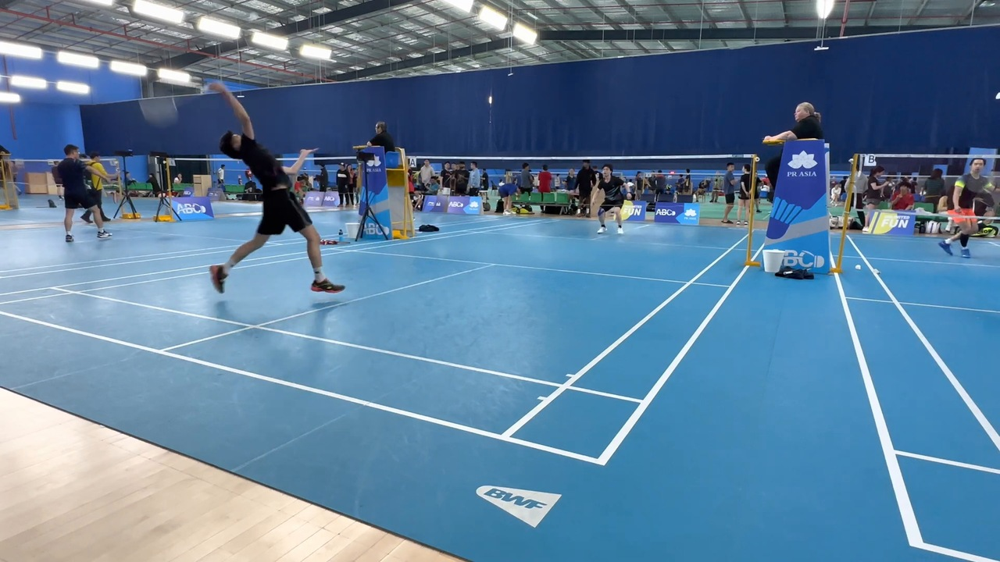
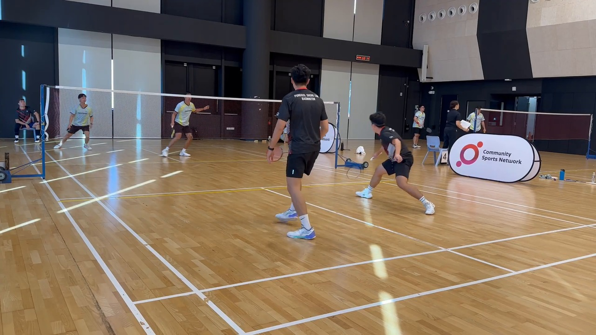

These sparse frames are grouped by video, not by verified stable camera view. Existing overlays are historical hypotheses. No alignment, stability test or temporal fitting has been performed for this packet. Use static scene structure to assess the images; do not use annotation agreement as proof.
gxBQ_window_00_frame_0 — 0.000 nominal seconds. native frame image.gxBQ_window_00_frame_5 — 0.083 nominal seconds. native frame image.gxBQ_window_00_frame_689 — 11.505 nominal seconds. historical annotated rendering; geometry is not a stability judgement.gxBQ_window_01_frame_5111 — 85.347 nominal seconds. historical annotated rendering; geometry is not a stability judgement.

gxBQ_window_02_frame_5766 — 96.285 nominal seconds. historical annotated rendering; geometry is not a stability judgement.

gxBQ_window_03_frame_77876 — 1300.426 nominal seconds. historical annotated rendering; geometry is not a stability judgement.

gxBQ_window_04_frame_86088 — 1437.555 nominal seconds. historical annotated rendering; geometry is not a stability judgement.

am2_window_00_frame_150 — seconds unavailable; frame index preserved. published frame rendering from the earlier stripe experiment.

am2_window_01_frame_28019 — seconds unavailable; frame index preserved. published frame rendering from the earlier stripe experiment.

am3_window_00_frame_0 — seconds unavailable; frame index preserved. published frame rendering from the earlier stripe experiment.am3_window_01_frame_10514 — seconds unavailable; frame index preserved. published frame rendering from the earlier stripe experiment.am3_window_02_frame_17174 — seconds unavailable; frame index preserved. published frame rendering from the earlier stripe experiment.

am3_window_03_frame_24515 — seconds unavailable; frame index preserved. published frame rendering from the earlier stripe experiment.